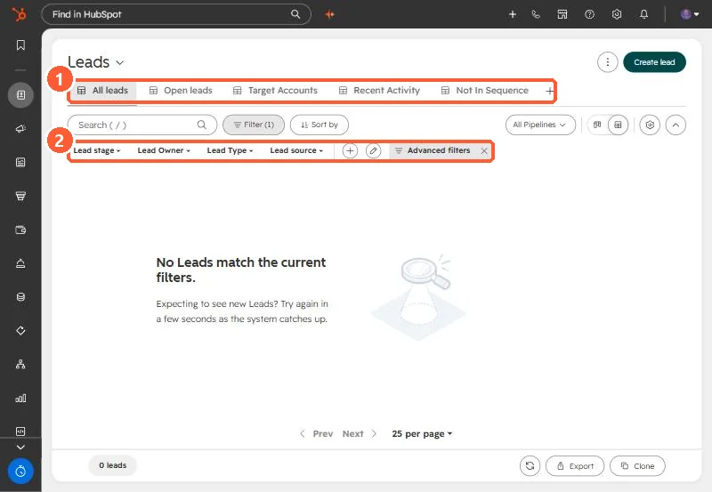

Short answer
HubSpot's KB: Sync lead activities with lead owner logs emails, meetings, calls, SMS and WhatsApp to an open lead. Sync lead owner with contact and company owner can update existing open leads. Closed leads don't sync.
1. In HubSpot
The relevant screen in my demo portal.


2. Worth knowing
Check the lead status when a sync doesn't happen.
3. Related
Leads object and mobile leads.